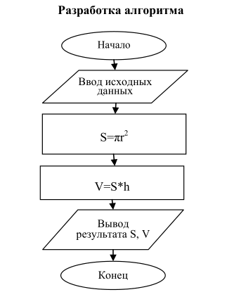
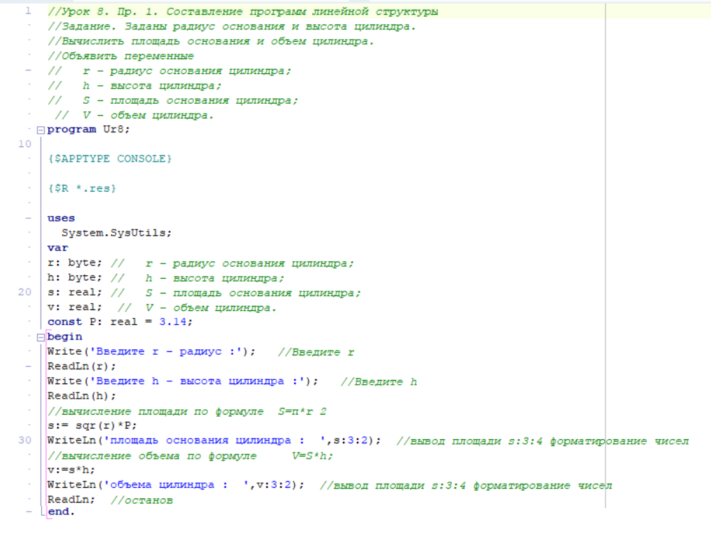
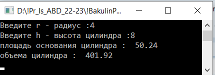

| Тема 1 Пример выполнения задания | ||
| Назад | ||
|
Задание. Заданы радиус основания и высота цилиндра. Вычислить площадь основания и объем цилиндра. Постановка задачи а) обозначение переменных Разработка алгоритма  Рис. 1. Блок – схема алгоритма линейной структуры примера выполнения задания. Пример 2.
 Вывод: 
|
||
| Конспект подготовлен Бакулиным А. М. 2022 год. | ||